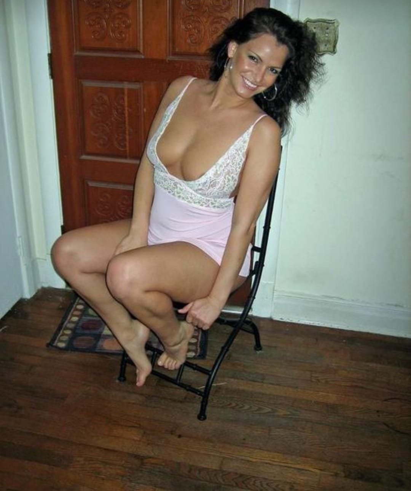

For older women
Practical guidance on profiles, privacy, better replies, and dating at a pace that feels comfortable.
OlderWomenDatingWeb.site is a warm dating guide for older women, mature women dating, senior singles, and people who want real conversations, safer first dates, and clear relationship intent.
The homepage speaks directly to older women dating, mature women dating, singles over 50, online safety, first dates, and age gap dating with respectful language that is useful for visitors and crawlable for search engines.
Practical guidance on profiles, privacy, better replies, and dating at a pace that feels comfortable.
Clear advice for people who want to meet mature women without stereotypes, pressure, or vague intentions.
Public first dates, on-platform messages, and money-request warnings help visitors stay in control.
Five original long-form guides support the homepage topic with internal links, article schema, FAQ schema, copyright images, and sitemap entries.
A thoughtful guide to dating women over 50 with respect, confidence, better messages, clear intentions, and safer first meetings.
Learn how mature women and the people who want to meet them can write stronger dating profiles with better photos and clearer intent.

A practical guide to first date ideas for singles over 50, including coffee, brunch, museums, public walks, and low-pressure plans.
Online dating safety tips for older singles, mature women, and people dating over 50, focused on privacy, money requests, and public dates.
A guide to age gap dating with older women, focused on respect, communication, realistic expectations, and confident first conversations.